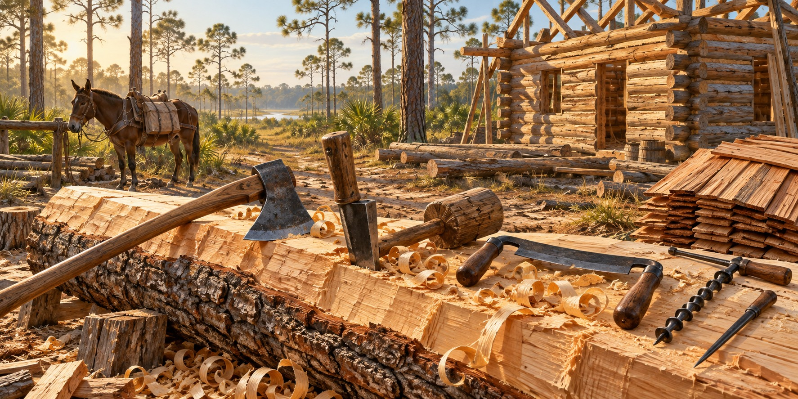

Frontier Tools
The Blades, Wedges, and Handles That Built Pioneer Florida

A pioneer family arriving at their Florida land carried everything they could not make and could not find: seed corn, salt pork, cloth, medicine and tools. The tools were the most carefully chosen items in the wagon. Get them right, and the forest became lumber, the lumber became walls, and the walls became a cabin. The frontier kit was small and extraordinarily capable.
The Cutting Tools
“The axe” was a family of tools. The felling axe, light and balanced for a full swing, brought trees down and cleared the land. The broadaxe, with a wide single-beveled blade, hewed a limbed log flat: a line was snapped along the log, vertical scoring cuts were made to it, and the broadaxe was swung horizontally to knock off the scored sections, leaving a worked face without a sawmill. The hatchet handled notches, wedges and kindling and rarely left arm’s reach.
The Splitting Tools
Splitting was everywhere on the frontier: fence rails, shingles, puncheon floor boards, chair parts and the wooden pegs that replaced iron nails. The froe, an iron blade with a wedge edge and a handle at a right angle, was set on the end grain and struck on its spine with a wooden mallet, then levered to steer the split. Longleaf pine split beautifully. The mallet, sometimes called a beetle, was a wooden club of live oak, hickory or persimmon, since metal would damage the froe.
The Shaping Tools
The drawknife, pulled toward the user, smoothed shingle faces, tapered handles and peeled bark, ranging from heavy stock removal to fine passes. The adze, with a curved blade set across the handle, dressed horizontal surfaces such as floor joists and puncheons and left a rippled, even texture that can still be seen on old timbers. The spokeshave handled curved work like chair rungs and complex handle tapers.
The Boring and Joining Tools
The auger bored holes for wooden pegs called trunnels, which joined the timber. The scribe, a large two-pointed compass, transferred one log’s profile onto another so a corner notch fit without shimming. The crosscut saw, single- or two-person, felled large trees and cut logs to length, and keeping its teeth filed to the right angle was a skill in itself.
Maintaining the Tools
Tools needed sharpening, cleaning and sound handles. A damaged edge or loose handle made work harder and less predictable. Repair and maintenance protected equipment that could be expensive to replace. The surviving tool marks on old timber show the effort involved, without establishing one daily routine for every Florida worker.
Seeing the Tools Today
Dudley Farm interprets historic agricultural work, and museum collections help explain the tools used to build and maintain farms. Looking at a blade beside the mark it left in wood connects an object with its purpose. Tool design and the worker’s skill both mattered.
Quick Facts
| Broadaxe | Hews logs flat; wide single bevel |
|---|---|
| Felling axe | Brings down trees; balanced for a full swing |
| Froe and mallet | Split rails, shingles and boards along the grain |
| Drawknife | Smooths and shapes by pulling toward the user |
| Adze | Dresses floor joists and puncheons |
| Auger | Bores holes for wooden trunnels |
| Scribe | Transfers a log’s profile for tight notches |
| Crosscut saw | Fells trees and cuts logs to length |
Did You Know?
Splitting tools followed the grain to make rails and shingles.
The froe was struck with a wooden mallet, never a metal hammer.
Vocabulary
Hewing: flattening a log’s sides by hand with a broadaxe.
Trunnel: a wooden peg joining timbers.
Whetstone: a stone used to sharpen blades.
Discussion Questions
1. Which single tool would you most want in the wagon, and why?
2. Why was tool maintenance part of daily work?
Related Articles
FLH-0049 — Log Construction Methods
FLH-0050 — Building a Homestead
FLH-0051 — Building with What the Land Provided
Sources
Sloane, Eric. A Museum of Early American Tools. Ballantine Books, 1964.
Ste. Claire, Dana. Cracker: The Cracker Culture in Florida History. Museum of Arts and Sciences, Daytona Beach, 1998.
Dudley Farm Historic State Park, Newberry, FL. Living history demonstrations.
Heritage Village of Pinellas County, Largo, FL; Manatee Village Historical Park, Bradenton, FL.
Florida Memory. State Library and Archives of Florida. floridamemory.com
NPS — Preservation and repair of historic log buildings